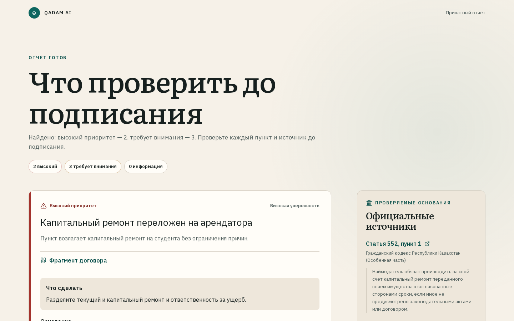

Понять договор аренды до подписи
Точный фрагмент. Официальная норма. Конкретный следующий шаг.
Не «все арендаторы». Один студент перед первым договором.
Иногородний студент
Впервые снимает жильё вне общежития. Договор приходит перед оплатой или заселением.
Job: за 3–5 минут понять, что уточнить письменно до подписи.
Текст выглядит официально
Но депозит, ремонт и расторжение описаны неясно или односторонне.
Свободный чат не даёт уверенности
Непонятно, где факт из договора, где норма и где догадка модели.
Нужен не вердикт, а действие
Какой пункт открыть, что спросить и как зафиксировать ответ арендодателя.
Большая аудитория. Узкая, ещё проверяемая гипотеза.
студентов в Казахстане
учатся не в своём населённом пункте
разница между нуждающимися и живущими в общежитии*
До подачи: 3–5 problem interviews + usability task
Без вымышленных цитат, NPS и процентов. В репозитории готовы guide, consent и evidence matrix.
* БНС РК, начало 2025–2026: нуждались 115,6 тыс.; проживали 95,3 тыс. Разность — вычисление команды.
QADAM связывает вывод с двумя доказательствами.
Читать и искать статьи
- медленно;
- сложно сопоставить пункт и норму;
- нет готового следующего шага.
Загрузить в свободный чат
- риск утечки PII;
- источник может быть выдуман;
- ответ сложно аудировать.
Пункт → норма → действие
- PII masking до provider;
- allow-list официальных источников;
- grounding gate и письменный вопрос.
Не заменяем юриста и не объявляем пункт «законным/незаконным» без прямого основания.
От файла до сообщения арендодателю — четыре шага.
Загрузить
PDF/DOCX до 10 МБ и явное согласие на обработку.
Увидеть приоритеты
Спорные и пропущенные условия с фрагментом договора.
Проверить основание
Официальная статья «Әділет» и границы уверенности.
Зафиксировать вопрос
Редактируемое вежливое сообщение по выбранному риску.
Отчёт не прячет доказательства за «AI summary».

Приоритет виден текстом, не только цветом.
Вывод привязан к условию договора.
Прямая ссылка на официальную статью.
Что согласовать до подписи.
Модель не решает, какие факты допустимы.
Inspectable scoring
0.45 lexical + 0.35 vector + 0.20 metadata; затем article-aware rerank.
Versioned corpus
15 chunks · 3 официальных акта · snapshot 2026-07-17 · SHA-256 provenance.
Без доказательств система должна сказать «не знаю».
Только retrieved source ID
Выдуманная citation отклоняется.
High severity требует норму
Иначе приоритет понижается.
Три режима Q&A
Document — фрагмент; action — finding; unsupported — отказ без evidence.
Скан без текста — ocr_required
Никакого анализа пустого изображения.
+7 701… → [ТЕЛЕФОН_1]
student@… → [EMAIL_1]
Сырые bytes не пишутся в БД. Access token хранится только как SHA-256.
Информационная помощь, не юридическое заключение.
Проверяем не обещание, а воспроизводимый путь.
backend tests
rules, privacy, grounding, API, persistence
frontend tests
upload, report, questions, negotiation
Q&A gates
9 synthetic cases: fact, action, refusal, RU→KZ
browser E2E
Axe, report, challenge и mixed RU/KZ
20/20 retrieval hit@5 · 24/26 clause families · Q&A 1.0 — synthetic regression, не legal accuracy
Начинаем там, где студент уже просит помощи.
10–20 студентов через campus legal clinic / student community.
Ошибки retrieval, непонятные labels, доля завершивших сообщение.
Юрист подтверждает corpus и спорные failure cases.
B2B2C-доступ для вузов и молодёжных центров; free student tier.
Проверяемая модель
Бесплатная первичная проверка для студента; организация оплачивает curated corpus, аналитику качества и сопровождение.
Главный KPI пилота: пользователь называет риск, открывает основание и формулирует письменный вопрос без подсказки.
Сделаем первый договор понятным до подписи.
Доступ к 10 студентам для problem + usability interviews.
Юридический куратор для review корпуса и risk rules.
Пилот с campus legal clinic или молодёжным центром.